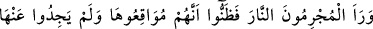
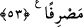

el-Kâmûs’ta şöyle der: “Mevbık” helâk yeri, cehennemde bir vâdi ve iki şey arasına
giren şey demektir.”
Mevbık kelimesinin cehennemde bir vâdi olmasına göre mânâ şöyledir: “Cehennem
vâdilerinden bir vâdi var ederim. Onların ortasında ki büyük bir helâk yeri olur ve
onların hepsine orada azâb ederim.”
Fakir (Bursevî) der ki: “Âyetin mânâsının kelimenin üçüncü anlamına göre olduğu
âşikardır. Yâni, onların arasına birini diğerinden ayıran bir engel (berzah) koyduk.
Engelin bir yanındakiler ötekilere şefaat etmezler;” demektir. Mesela melekler, Îsâ ve
Üzeyir (a.s.) onlara şefaat etmezler. Diğerleri de onlardan uzaklaşmıştır. Açıktır ki bu,
cehenneme girmesine hükmedilen kimselerin orada toplanmalarına ve müştereken
cehennemde olmalarına engel değildir.
53. Suçlular ateşi görür görmez, orayı boylayacaklarını iyice anladılar; ondan
kurtuluş yolu da bulamadılar.
“Suçlular ateşi görür görmez,” oraya sevk edilmeleri emrolununca, Kâşifî der ki:
“Müşrikler cehennem ateşini kırk yıllık mesafeden görünce” işte o zaman “orayı
boylayacaklarını iyice anladılar;” ateşe atılıp cehennem ehli ile karıştırılacaklarını
kesin olarak bildiler.
İmam (Râzi) şöyle demiştir; “Burada uygun olan manâ şudur; Suçlular cehennemi
uzaktan gördüklerinde cehennemin öfkesini ve ateşin gürlemesini işitince oraya hemen
atılacaklarını zannederler. Nitekim Allah Teâlâ şöyle buyurur: “(Ateş) onları uzak bir
yerden görünce onlar bunun (kendilerine karşı) öfkesini ve homurtusunu işitirler.”
(el-Furkan, 25/12) Uzak yerden maksad, elli bin senelik mesafedir.
“Ondan kurtuluş yolu da bulamadılar.” Ondan uzaklaşmak için bir yer de
bulamadılar. Kâşifî der ki: “Geri dönecek ya da kaçacak bir yer bulamadılar.” Çünkü
ateş onları çepeçevre kuşatmıştır.
[189]. Bk. Aclûnî, I, 455
[190]. Bk. Irâkî, Muğni, IV, 344